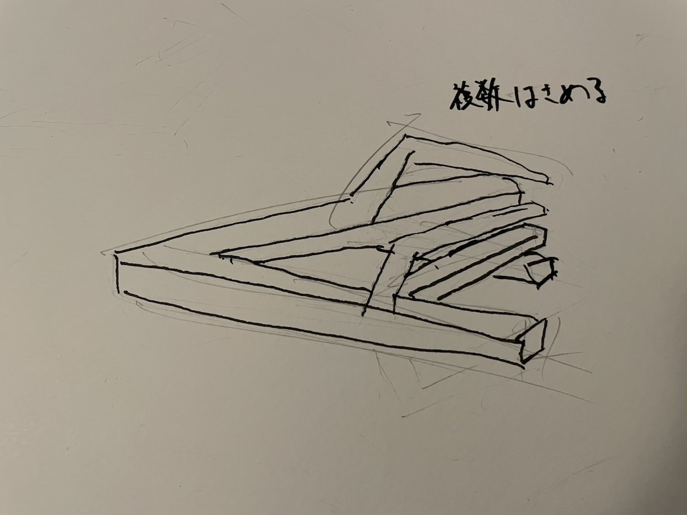
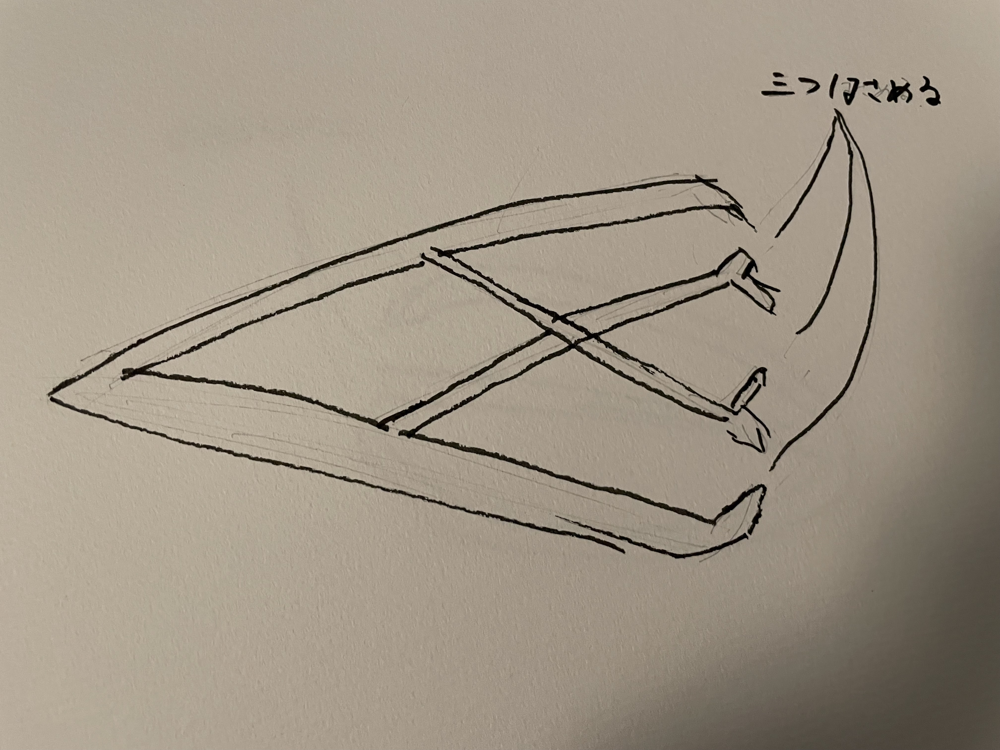
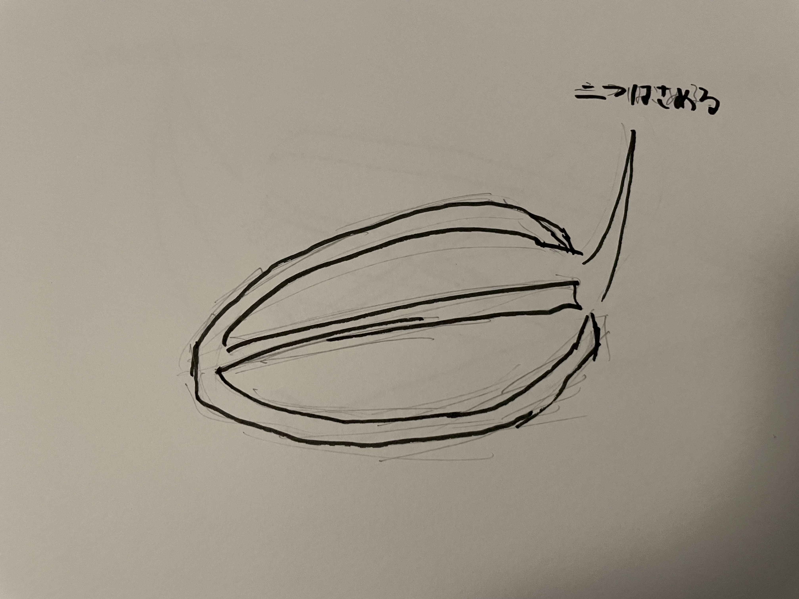
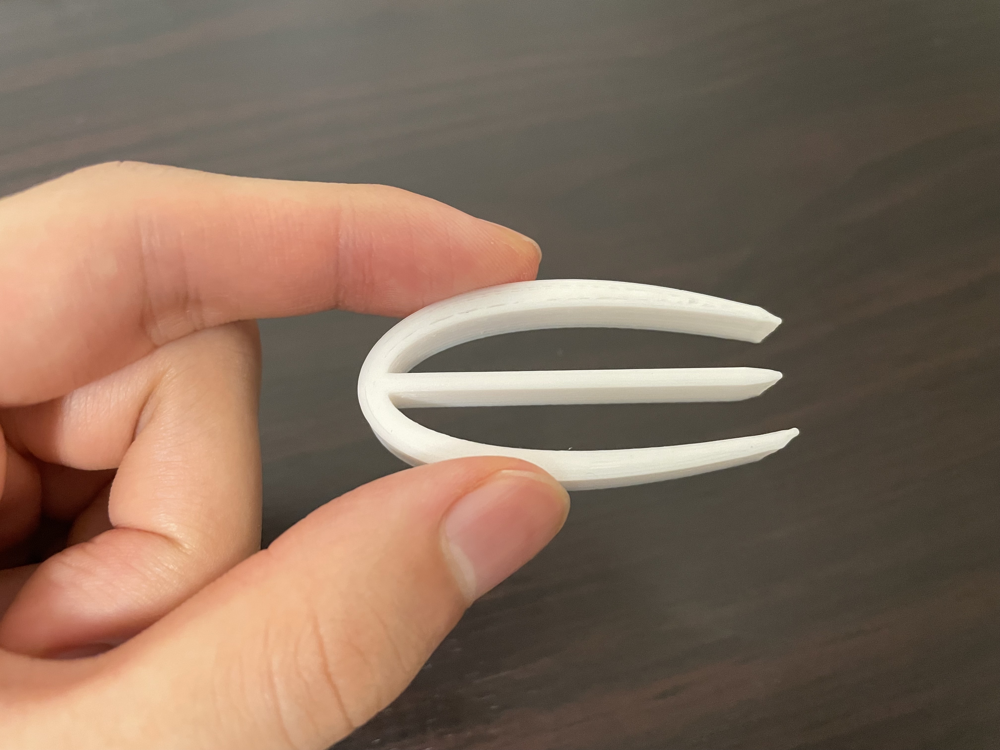
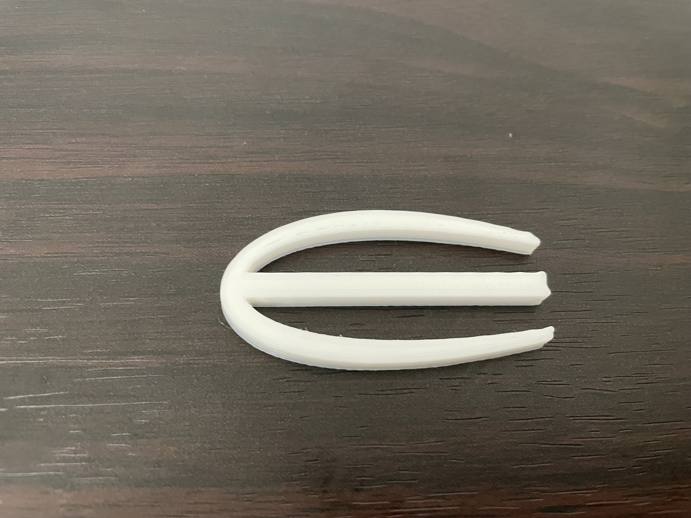
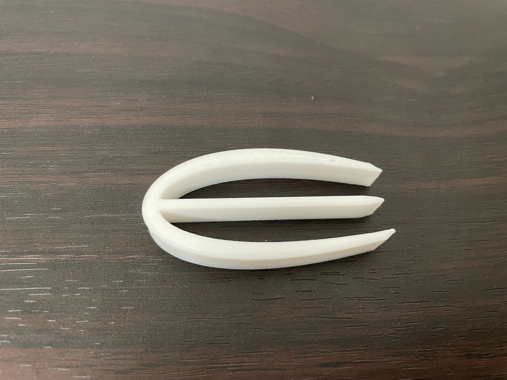

第1回課題
1.タイトル
複数つかめるピンセット
2.構想段階の手書きスケッチ



3.作品の画像

4.設計ファイル
stlファイル
5.作品の説明
通常のピンセットの形状のに真ん中に一本の棒を入れ、2つのものを掴むことができる。
6.何故この作品を作ろうという想いに至ったか
授業資料にあった過去の学生の作品例の一つを見て着想を得た。
Digital Fabrication2021 3DPrinting 過去の学生の例 複雑な複雑な形状
初めはアートのような作品にしようと考えたが、自身の技術や努力不足により断念した。
しかし当初の案から、挟む部分が複数あるというアイデアを取り入れ、最低限の技術で作れるシンプルなデザインにした。
7.制作プロセス
初めに下のようなstlファイルで実際にプリントを行った。
stlファイルv1

この形状だと、真ん中の棒が少し太く先端が大きくなってしまうため、掴みづらかった。
そのため、真ん中の棒を細くし、さらに先端を尖らせてプリントしてみた。。
stlファイルv3

そうすることで細かいものも掴みやすくなった。